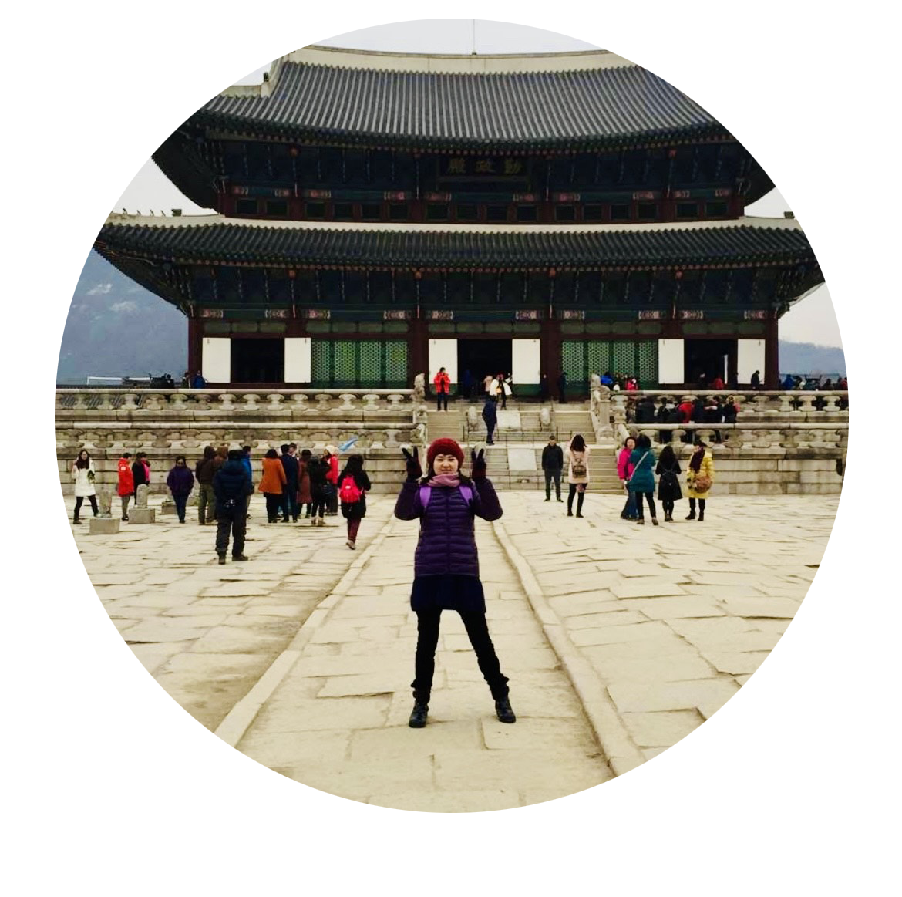
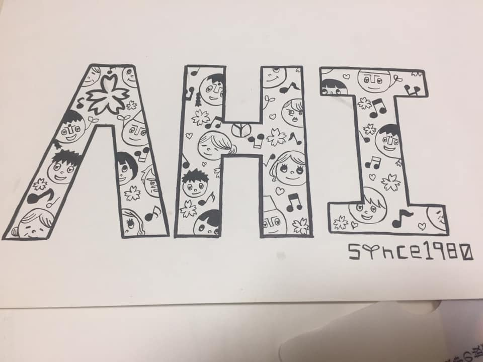
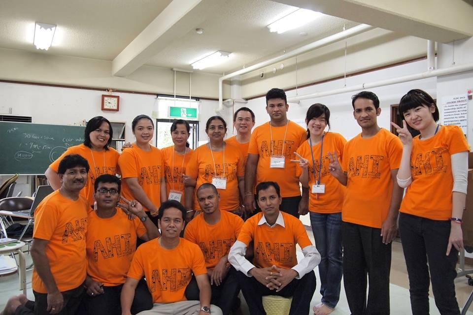

YUMA KUROMIYA
黒宮 由眞
幼いころから絵やデザインが好きで、独学や絵画教室でイラスト・漫画・ポスターなどを作ってきました。
大学では知覚や色彩の心理学を学び、学芸員資格を取得。
卒業後はNGOインターン、病院事務、文化振興事業団での事務を経験しました。
現在はITスクールでWebデザインとプログラミングを学びながら就職活動を進めています。
趣味はイラスト、ゲーム、映画です。

インターン時代にデザインしたTシャツ

集合写真
スキル
-
コーティング
HTML/CSS/JavaScript
HTML/CSS/jQueryで作成することが可能です。
見やすさを大事にテーマに合わせてデザインを考えられます。 -
デザイン
Illustrator/Photoshop
基本的な操作を使いこなします。
業務により常に新しいスキルを身につけて
デザインの理想に近づけれることを意識しています。 -
イラスト
Illustrator /CLIP STUDIO PAINT
イメージに近い素材がない場合、必要と考えた場合アナログ
＜アナログ＞油絵/アクリルガッシュ/水彩/漫画
デジタルでのイラスト制作が可能です。
強み
オシャレ・可愛い・ポップで親しみやすいデザインが得意です。
デザインを求めている方の要望に対して様々なタッチでイラストを描いたり、デザインを考えられます。
前職では月刊の催し案内を担当していたため、締切管理や作業配分にも自信があります。
対象者に合わせた見やすいデザインを心がけ、内容がしっかり伝わるよう簡潔さにも気を配っています。